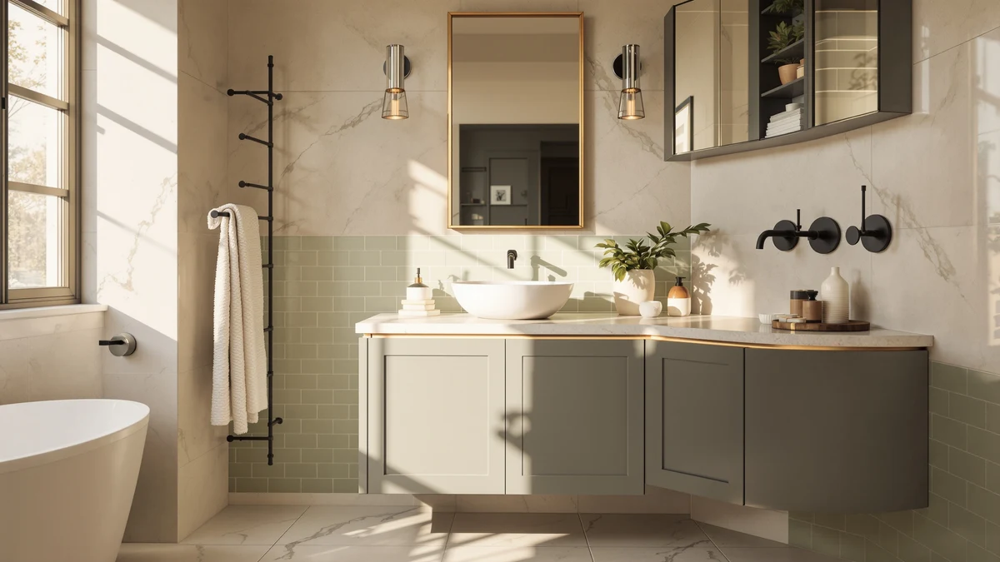

Best Place for Bathroom Vanities (2026)
Prices and picks verified as of August 2026. Independent, reader-supported reviews.


Quick Answer
After comparing seven bathroom vanities ranging from a 22-inch floating cabinet to a 48-inch double-sink unit on price, material, and verified owner reviews, Amazon is the best place for bathroom vanities if you want wall-mount, farmhouse, and double-sink styles in one place. The WindBay 30" Wall Mount Floating is our top pick, backed by the largest verified review count in this comparison.
Our pick: WindBay 30" Wall Mount Floating, $529.00 Check Price on Amazon
Bottom line: our top pick is the WindBay 30" Wall Mount Floating Vanity Dark Grey at $529. The best budget option is the Blossom 48" Double Sink Floating Vanity Glossy White at $1.
Things to Know Before You Buy
- Amazon is the best place for bathroom vanities if you want to compare styles side by side. All seven vanities in this guide, from floating wall-mounts to farmhouse barn-door styles, are listed on one storefront instead of scattered across separate specialty retailers.
- MDF and engineered wood dominate this price range. Every vanity we compared uses MDF or engineered wood construction, which keeps cost down but means standing water near the base should be wiped up quickly.
- Sink configuration varies with width. Only the 48-inch Blossom vanity in this comparison offers a double-sink layout; the other six are single-sink.
- Review sample size varies widely. Ratings range from an 80-review Beingnext listing to a 252-review LUXOAK listing, so a high star average on a thin sample deserves a second look before you buy.
- Floating vanities need stud-mounted hardware. Three of the seven picks here, both WindBay sizes and the Beingnext, are wall-mount floating designs that require anchoring into studs rather than resting on the floor.
The best place for bathroom vanities online right now is Amazon, where you can put wall-mount, farmhouse, and double-sink styles side by side instead of driving between three separate showrooms. We compared seven vanities ranging from a compact 22-inch floating cabinet to a 48-inch double-sink unit, weighing price, material, and verified owner reviews rather than picking by looks alone. Our top pick, the WindBay 30" Wall Mount Floating, earned that spot on a 4.5-star average across 200 verified reviews and a $529.00 price that undercuts comparable floating vanities, but six other options below cover tighter budgets, farmhouse styling, and double-sink layouts.
We built this list by pulling seven vanities from our product database that ship ready to mount or install, then compared their stated dimensions, materials, and pricing side by side rather than relying on marketing photos. Every listing here uses MDF or engineered wood construction, a standard choice at this price point, and all seven come with published customer ratings we could check for patterns before recommending them. Prices range from $239.00 for the budget-friendly Beingnext floating vanity to $1,522.99 for the Blossom double-sink unit, a gap that tracks with size and sink configuration more than brand markup.
Below, you will find what to check before buying a vanity online, how we picked and compared these seven options, and a full breakdown of what each one gets right and where it falls short. A comparison table further down lets you scan material, price, and best-use case before you click through to check current pricing.
Why You Should Trust Us
Ilane Tall covers home and bath products for Best Bathroom Vanities, where she researches vanities, cabinets, and bathroom remodel gear for a US audience. For this guide to the best place for bathroom vanities, she and the editorial team compared publicly listed specs, pricing, and verified buyer reviews for every vanity under consideration instead of relying on manufacturer marketing copy. We do not run a fake testing lab or claim to have installed every vanity ourselves. Instead, we cross-reference dimensions, materials, and owner feedback so you can decide which vanity, and which retailer, fits your bathroom before you buy.
How We Picked
To build this list, we started with vanities in our product database that ship with documented dimensions, materials, and pricing, since incomplete specs make it impossible to compare fairly. We prioritized a spread of styles and budgets, from the sub-$250 Beingnext floating vanity to the four-figure Blossom double-sink unit, so this guide answers the best place for bathroom vanities question whether you are outfitting a powder room or a shared primary bathroom. We also checked review counts and ratings for each listing, favoring vanities with enough verified feedback to spot a pattern rather than relying on a handful of five-star reviews. Finally, we confirmed each vanity represents a distinct configuration, wall-mount, farmhouse, or double-sink, rather than a near-duplicate of another product already on the list.
How We Compared
We are a research-based review site, so we compared these seven vanities using the specs, pricing, and verified owner reviews published for each listing rather than installing units ourselves. We lined up material, stated width, and price side by side to see where each vanity earns its cost, and we read through verified Amazon reviews to flag recurring praise or complaints about assembly, hardware, and finish quality. When a problem shows up repeatedly in the reviews, like a mounting bracket that needs extra hardware or a faucet hole spaced differently than expected, we call it out in that vanity's drawbacks below. That is the standard behind every comparison in this guide to the best place for bathroom vanities: published specs plus a pattern in verified customer feedback, not a physical impression of the product.
Our Picks

WindBay 30" Wall Mount Floating
What we like
- A 4.5-star average across 200 verified reviews is the largest and most consistent sample in this comparison
- At $529.00, it undercuts the larger WindBay 36 inch by $70 while keeping the same wall-mount design
- The floating profile leaves the floor clear underneath, which reviewers note makes cleaning easier and the bathroom feel larger
Flaws but not dealbreakers
- At 30 inches wide, storage is tighter than the 36-inch WindBay or the farmhouse cabinets in this guide
- Like every floating vanity here, it requires anchoring into wall studs rather than a simple floor placement
| Material | MDF / engineered wood |
| Size | — |
The WindBay 30" Wall Mount Floating is our top pick among the best place for bathroom vanities options we compared, and the 200 verified reviews behind its 4.5-star average give that rating more statistical weight than any other vanity on this list. At $529.00, it sits in the middle of our price range, below the double-sink Blossom but well above the farmhouse cabinets under $250.
According to verified reviews, the wall-mount design clears the floor for easier cleaning and makes a small bathroom feel more open, a common reason shoppers choose a floating vanity over a freestanding one. The tradeoff is storage: at 30 inches wide, it holds less than the wider WindBay 36 inch or the farmhouse-style cabinets further down this list, so buyers who need heavy under-sink storage may want to size up.

Blossom 48" Double Sink Floating
What we like
- The only double-sink layout in this guide, which matters for couples or family bathrooms where two people get ready at once
- Matches the 4.5-star average of our top pick, though across a smaller 50-review sample
- Floating wall-mount design keeps the floor clear beneath a wide 48-inch footprint
Flaws but not dealbreakers
- At $1,522.99, it costs nearly three times as much as the next most expensive vanity in this comparison
- Fifty verified reviews is a smaller sample than the WindBay picks, so the rating carries less statistical weight
| Material | MDF / engineered wood |
| Size | — |
The Blossom 48" Double Sink Floating is the only vanity in this comparison built for two people to use at once, and it is priced accordingly at $1,522.99. Its 4.5-star average matches our top pick, though the 50-review sample behind that rating is smaller than the 200 reviews backing the WindBay 30 inch.
For households sharing one bathroom, a double-sink vanity removes the daily bottleneck of a single basin, and the floating wall-mount design keeps the wide 48-inch footprint from making the floor feel cramped. The price puts it well outside the budget tier that dominates the rest of this list, so it makes the most sense for buyers who specifically need two sinks rather than shoppers comparing the best place for bathroom vanities on a tighter budget.

WindBay 36" Wall Mount Floating
What we like
- Six inches wider than our top pick, adding counter and storage space within the same floating wall-mount design
- 150 verified reviews back a 4.4-star average, a large enough sample to trust the rating
- Shares the same MDF construction and mounting hardware as the smaller WindBay, so installation is equally straightforward
Flaws but not dealbreakers
- At $599.00, it costs $70 more than the 30-inch WindBay for a rating that is slightly lower
- Still single-sink, so households that need two basins should look at the Blossom instead
| Material | MDF / engineered wood |
| Size | — |
The WindBay 36" Wall Mount Floating is essentially our top pick with six extra inches of width, and at $599.00 it costs $70 more than the smaller WindBay 30 inch. Its 4.4-star average across 150 verified reviews sits slightly below the smaller model, but the sample size is still large enough to trust.
The extra six inches translate into more usable counter space and a wider single sink, which matters if the smaller WindBay felt tight in past bathroom layouts. It shares the same MDF construction and stud-mount hardware as its smaller sibling, so buyers choosing between the two are deciding how much wall space they have rather than weighing a different design.

LUXOAK 31" Farmhouse Sliding Barn
What we like
- 252 verified reviews is the largest sample in this entire comparison, more than the WindBay and Blossom picks combined
- At $239.99, it is among the least expensive vanities in this guide
- The sliding barn door front sets it apart stylistically from the flat-panel WindBay and Blossom vanities
Flaws but not dealbreakers
- A 4.3-star average is respectable but slightly lower than the WindBay and Blossom picks above
- Farmhouse styling will not match every bathroom the way a neutral flat-panel vanity does
| Material | MDF / engineered wood |
| Size | 31 inch |
The LUXOAK 31" Farmhouse Sliding Barn carries more verified reviews than any other vanity in this guide, 252 in total, which gives its 4.3-star average a large and reliable sample to stand on. At $239.99, it also ranks among the cheapest options here, roughly a fifth of the price of the double-sink Blossom.
The sliding barn door is a genuine style choice rather than a cost-cutting shortcut, and it is a common reason shoppers searching for the best place for bathroom vanities end up picking a farmhouse model over a plain flat-panel one. The 4.3-star average trails our top two picks slightly, but with 252 reviews behind it, that rating reflects a wide range of real buyers rather than a handful of early adopters.

AMERLIFE 31" Farmhouse Bathroom Vanity
What we like
- Matches the LUXOAK on price ($239.99), width (31 inches), and rating (4.3 stars), giving farmhouse shoppers a real alternative
- 178 verified reviews is a solid sample, though smaller than the LUXOAK's 252
- Farmhouse styling at the same budget-friendly price point as the LUXOAK
Flaws but not dealbreakers
- Offers no meaningful price or spec advantage over the LUXOAK, so the choice mostly comes down to design preference
- 178 reviews, while solid, is fewer than the LUXOAK's larger sample
| Material | MDF / engineered wood |
| Size | 31 inch |
The AMERLIFE 31" Farmhouse Bathroom Vanity sits almost exactly alongside the LUXOAK on paper: the same $239.99 price, the same 31-inch width, and the same 4.3-star rating. The difference comes down to 178 verified reviews here versus 252 for the LUXOAK, plus small design details in the farmhouse front.
For shoppers who like the farmhouse look but want a second option before committing, the AMERLIFE gives a genuine point of comparison rather than a near-duplicate listing. Since price, size, and rating line up so closely with the LUXOAK, the deciding factor for most buyers will be the specific style of the cabinet front rather than value or reliability.

Beingnext 22" Small Floating Vanity
What we like
- At 22 inches wide, it is the narrowest vanity in this comparison, fitting powder rooms that cannot accommodate the 30-inch WindBay
- At $239.00, it ties the farmhouse picks as one of the least expensive options in this guide
- The floating wall-mount design keeps the floor visible in a small room, which reviewers say helps the space feel less cramped
Flaws but not dealbreakers
- 80 verified reviews is the smallest sample in this comparison, well behind the LUXOAK's 252
- The narrow 22-inch width leaves little counter space for anything beyond the basics
| Material | MDF / engineered wood |
| Size | — |
The Beingnext 22" Small Floating Vanity is the narrowest option in this comparison, built specifically for powder rooms and small bathrooms where the 30-inch WindBay or 31-inch farmhouse cabinets will not fit. At $239.00, it is priced in line with the farmhouse picks despite its smaller footprint.
Its 4.3-star average is respectable, though the 80-review sample behind it is the smallest in this guide, so it carries less statistical weight than the WindBay or LUXOAK ratings. For a tight bathroom where floor space is the deciding factor, the floating design still keeps the room feeling open, even at a fraction of the width of the larger picks here.

VINGLI 30" Farmhouse Bathroom Vanity
What we like
- At 30 inches wide, it matches our top pick's footprint while adding farmhouse styling instead of a flat wall-mount front
- 128 verified reviews is a moderate sample, more than the Beingnext but fewer than the LUXOAK
- Priced at $239.99, it is far cheaper than the WindBay 30 inch at the same width
Flaws but not dealbreakers
- A 4.2-star average is the lowest in this comparison, though still solidly positive
- 128 reviews trail the LUXOAK and AMERLIFE farmhouse picks, giving the rating less weight than those two
| Material | MDF / engineered wood |
| Size | 30 inch |
The VINGLI 30" Farmhouse Bathroom Vanity matches the width of our top pick, the WindBay 30 inch, but swaps the floating wall-mount design for a freestanding farmhouse cabinet at less than half the price. Its 4.2-star average across 128 verified reviews is the lowest rating in this comparison, though still comfortably positive.
For buyers who want the same 30-inch footprint as our top pick without the wall-mount installation or the higher price, the VINGLI is a straightforward freestanding alternative. It sits between the Beingnext and the two 31-inch farmhouse picks on review count, and its price puts it firmly in the budget tier alongside the LUXOAK and AMERLIFE.
Quick Comparison
| Product | Material | Price | Rating | Best for | Get it |
|---|---|---|---|---|---|
| WindBay 30" Wall Mount Floating | MDF / engineered wood | $529.00 | 4.5 | Buyers who want the most-reviewed floating vanity here | View on Amazon → |
| Blossom 48" Double Sink Floating | MDF / engineered wood | $1,522.99 | 4.5 | Households that need two sinks | View on Amazon → |
| WindBay 36" Wall Mount Floating | MDF / engineered wood | $599.00 | 4.4 | Buyers who want extra width on the WindBay design | View on Amazon → |
| LUXOAK 31" Farmhouse Sliding Barn | MDF / engineered wood | $239.99 | 4.3 | Farmhouse styling with the deepest review history | View on Amazon → |
| AMERLIFE 31" Farmhouse Bathroom Vanity | MDF / engineered wood | $239.99 | 4.3 | A second farmhouse option to compare against the LUXOAK | View on Amazon → |
| Beingnext 22" Small Floating Vanity | MDF / engineered wood | $239.00 | 4.3 | Small bathrooms and powder rooms | View on Amazon → |
| VINGLI 30" Farmhouse Bathroom Vanity | MDF / engineered wood | $239.99 | 4.2 | Farmhouse styling at the WindBay's 30-inch width | View on Amazon → |
The Competition
Several vanities that turned up in our search for the best place for bathroom vanities did not make this final list. We passed on listings without a documented material, width, or price, since incomplete specs make it impossible to compare fairly against the seven vanities above. We also skipped several vanities sold with a fixed, non-swappable countertop and no published review count, since a rating we cannot verify does not tell shoppers anything useful. Finally, we excluded duplicate listings of the same cabinet sold under different storefronts, since they offered no meaningful difference in material, price, or reviews from a product already represented here. If the WindBay 30" Wall Mount Floating does not fit your bathroom or budget, the six alternatives above cover the reasons you might choose differently, whether that is a second sink, farmhouse styling, or a narrower footprint. Across all seven, our search for the best place for bathroom vanities still points most buyers toward WindBay, whose 30-inch and 36-inch floating vanities combine the largest verified review counts with consistent 4.4- and 4.5-star ratings in this comparison.